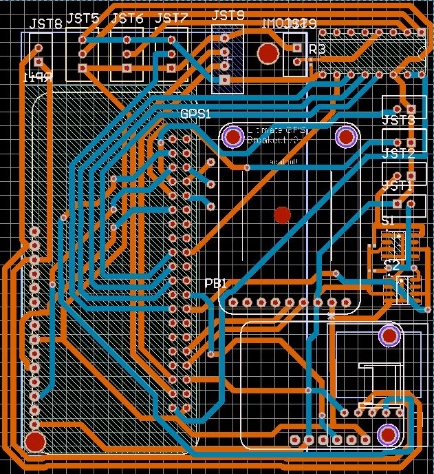

Hans Gaensbauer |
click to stop
If you're reading this, you spelled my name right! Here, I've outlined all of the most interesting or important projects I've done in the last year.
I have redesigned the PCB for the balloon!

We did not remove the ADC, instead, we will redesign the breakouts for
the MQ sensors using protoboard. We added a JST connector for the PM 2.5
sensor, and widened the distance between the pads and the polygon pour.
The other important change is the addition of a GSM module from DIYmall.
This will allow the balloon to communicate with SMS while it is at low
altitude without having to wait for Iridium's servers. More importantly,
the GSM module has a much higher communication speed, so we can pull
pictures from the Raspberry Pi on the way down. If we lose the balloon,
we will still be able to collect all of its data.